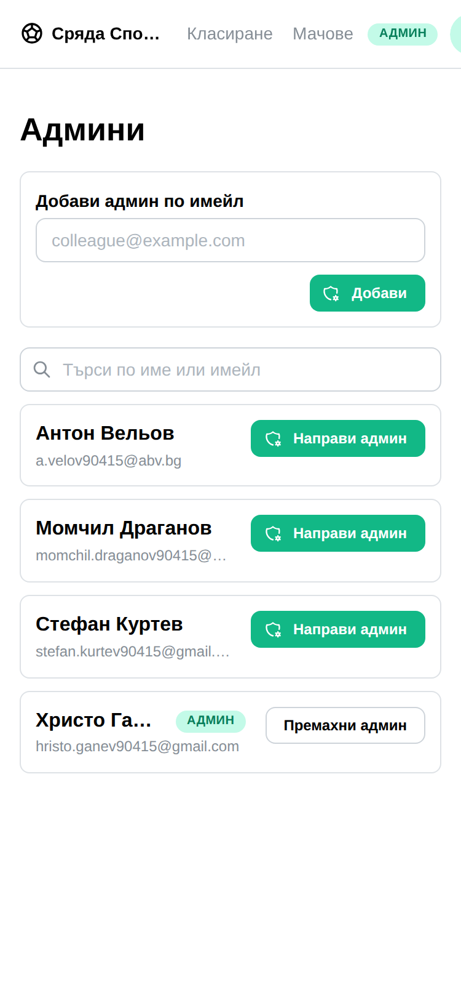
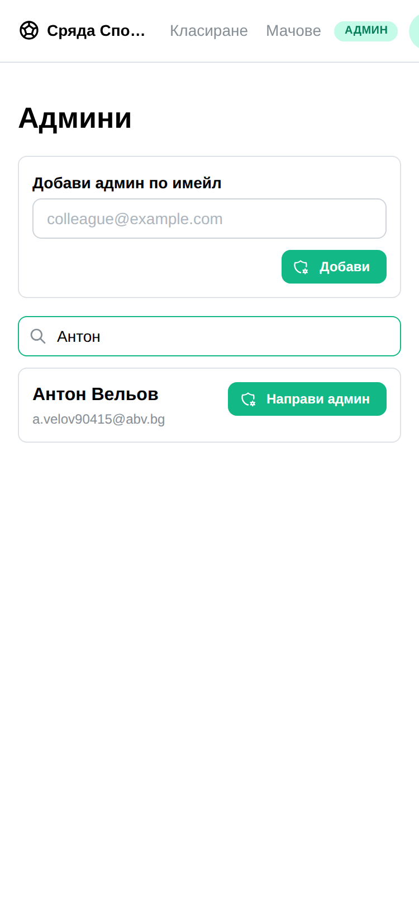
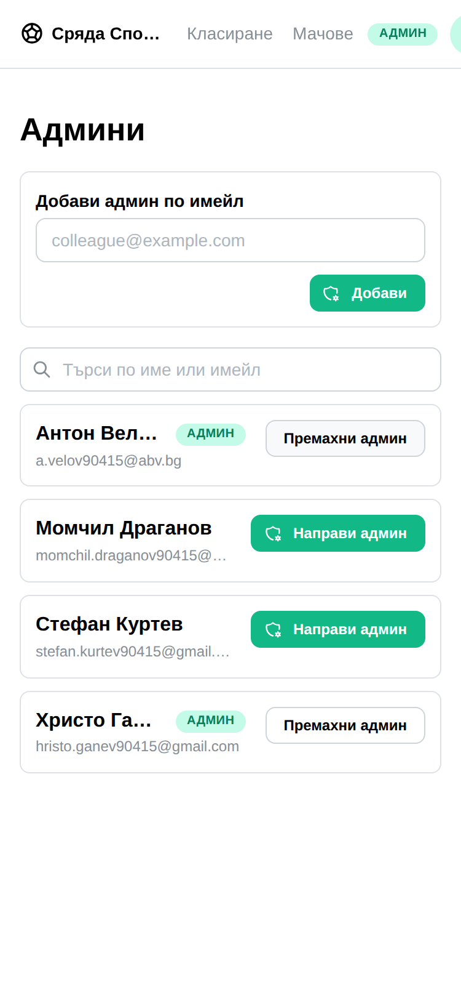
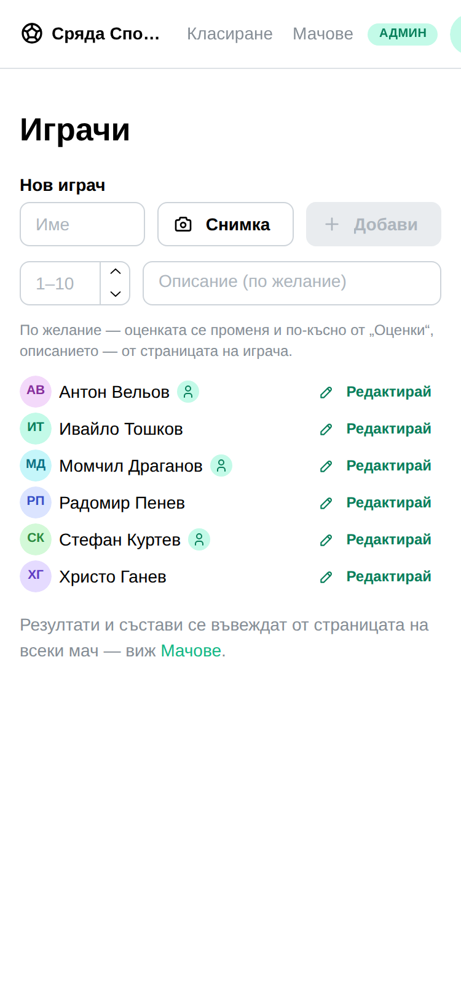
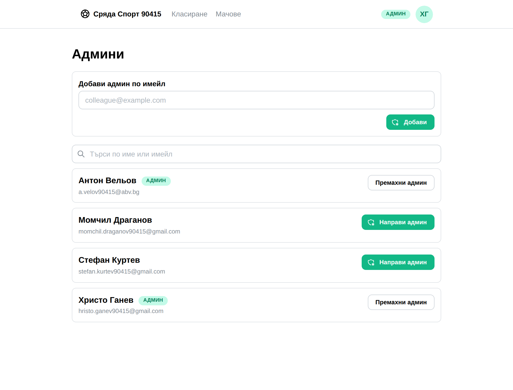

optimum-stars · OSAP
Админ вече не се добавя само по имейл. Хората от твоя състав, които гласуват от профил, стоят на екрана — натискаш името.
Всички хора тук са измислени и всички адреси са измислени. Екранът е истинският: снимките са правени в браузър срещу пълния стек — вписване през формата, нова лига, състав, свързани профили, натиснат бутон.
Момчил, Антон и Стефан играят тук и гласуват от профил, затова екранът ги предлага — с името от състава и адреса под него. Радомир и Ивайло също играят, но нямат профил, затова ги няма. Христо е админът: неговият ред носи Премахни админ, не оферта.

„Антон“ не е името от регистрационната форма и не е адресът. То е единственото име, което админът знае. Полето търси и по трите.

Антон вече е админ: значка, Премахни админ, и офертата я няма. Вписва се точно същият ред в group_admins, който вписването по имейл прави — един вид админ, едно право.

Редакторът на играчи вече показваше кой от кой профил гласува. Списъкът горе е точно същият набор, зад същата проверка — на екрана не се появява нищо, което админът не можеше да прочете и преди.

